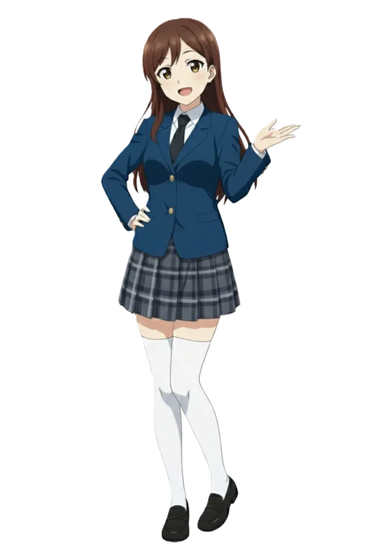

철도부! 팬미팅: 종점 없는 티켓
- 1. 개요
- 2. 행사 기획 및 특징
- 2.1. 한·일 성우 더블 캐스팅 랑데부
- 2.2. 소극장 밀착형 포맷과 파격적인 티켓 할인
- 2.3. 스탬프 패스포트 (환승권)
- 3. 회차별 일정 및 출연진
- 4. 주요 코너 및 프로그램
- 5. 에피소드 및 여담
- 5.1. 회차별 레전드 에피소드
- 5.2. 관계자 및 시민들의 광기 어린 여담
- 5.3. 성우 관련 여담
- 6. 둘러보기
1. 개요
효빈교통공사의 대중교통 모에화 프로젝트 '레일루미네' 및 TV 애니메이션 『철도부!』 팬들을 위해 기획된 장기 릴레이 팬미팅 프로젝트.
단발성 이벤트가 아닌 장장 20개월에 걸친 대형 프로젝트로, 2024년 10월부터 시작하여 대망의 피날레인 2026년 4월까지 격월(2개월에 1번) 단위로 총 10회에 걸쳐 남구 평당동의 효빈문화회관(3,000석 규모)에서 릴레이로 진행된다. 기획 초기에는 매월 1회씩 진행하자는 의견도 있었으나, "한 달에 한 번씩 열면 덕후들 돈이 싹 터져나가 파산한다(...)"는 IP사업부의 현실적인(양심적인) 판단 하에 2달에 1번 꼴로 완화되었다. 물론 2달 텀이라도 3천 석 피케팅을 뚫어야 하는 코어 팬들의 멘탈과 지갑이 박살 나는 건 매한가지다.
이 행사의 가장 독특하고 파격적인 점은 바로 매 회차마다 단 하나의 '노선(캐릭터)'만을 집중 탐구하며, 해당 캐릭터를 연기한 한국어판 성우와 일본어판 성우 단 두 명만이 '짝(Pair)'을 이루어 무대를 전세 낸다는 것이다. 더욱이 팬미팅의 개최 순서는 단순한 호선 번호순이 아닌, 설정 덕후들을 환장하게 만드는 '효빈시 지하철 실제 개통 순서'를 철저하게 따랐다.
2. 행사 기획 및 특징
2.1. 한·일 성우 더블 캐스팅 랑데부
통상적인 서브컬처 팬미팅이 성우진을 단체로 부르거나 특정 국가의 성우만 부르는 것과 달리, '같은 캐릭터를 공유하는 양국 성우의 심층 만남'에 100% 초점을 맞췄다. 예를 들어 Vol.2에서는 1호선 고나미 역의 박지윤(韓)과 세토 아사미(日)가 2시간 내내 고나미의 FM 꼰대 성격, 철덕 속성, 그리고 녹음 비하인드에 대해서만 떠든다. 오직 하나의 캐릭터를 한일 양국의 디테일한 연기 톤으로 심도 있게 즐길 수 있어, 해당 캐릭터의 이른바 '진성 오시(코어 팬)'들에게는 미슐랭 3스타급 뷔페나 다름없다.
2.2. 소극장 밀착형 포맷과 파격적인 티켓 할인
15,000석 규모의 초대형 엑스포 홀에서 스펙터클하게 열렸던 1st Live와 대조적으로, 팬미팅은 약 3,000석 규모의 효빈문화회관에서 상대적으로 오붓(?)하게 진행된다. 거대한 퍼포먼스보다는 관객과의 실시간 소통, 무근본 Q&A, 사연 읽기 등 밀착형 토크에 집중한다.
특히 티켓 가격 정책이 팬덤 사이에서 '혜자'로 칭송받는데, 전석 77,000원이라는 상대적으로 저렴한 기본가에 효빈시민에게는 10% 할인이 적용된다. 무엇보다 압권은 현역 군장병 및 사회복무요원(공익)에게 무려 30%의 파격 할인을 제공한다는 점이다. 대중교통 최전선(지하철역)에서 진상 민원인들과 맞서 싸우며 매일 고통받는 사회복무요원들과, 나라를 지키는 군인들을 위로하기 위한 효빈교통공사의 파격적인 배려라고 한다. 덕분에 팬미팅이 열리는 주말이면 휴가증을 손에 쥔 전투복 차림의 군인들과 퇴근 후 제복을 입고 달려온 사회복무요원들이 펜라이트를 미친 듯이 흔드는 진풍경이 펼쳐진다.
2.3. 스탬프 패스포트 (환승권)
장기 릴레이 행사답게 첫 예매자들에게 전용 '승차권형 패스포트' 굿즈를 발급한다. 격월로 팬미팅 현장에 참석할 때마다 해당 노선의 고유 색상과 캐릭터 얼굴이 박힌 특별한 도장(스탬프)을 찍어준다. 10개의 도장을 모두 모은 '올클리어' 달성자에게는 VVIP 최우선 예매권 및 특별 칭호(효빈시 명예 관제사)가 부여된다는 공식 오피셜이 뜨면서, 팬덤 사이에서는 20개월 연속 피 터지는 예매 전쟁이 벌어지고 있다.
3. 회차별 일정 및 출연진 (진행 중)
※ 현재 (2026년 3월 말 기준) 개통 순서에 따라 Vol.9 빈효선(전노아) 편까지 성황리에 마무리되었으며, 대망의 최종화인 Vol.10 8호선(유리아) 예매가 완료된 상태다.
| 회차 | 상태 | 일정 | 테마 노선 | 테마 캐릭터 | 출연진 (韓 / 日) |
|---|---|---|---|---|---|
| Vol.1 | 완료 | 2024.10.26 | 7호선 (상행) | 임세정 | 윤미나 (KR) & 스즈키 아이나 (JP) |
| Vol.2 | 완료 | 2024.12.21 | 1호선 | 고나미 | 박지윤 (KR) & 세토 아사미 (JP) |
| Vol.3 | 완료 | 2025.02.22 | 2호선 | 하루빈 | 김선혜 (KR) & 우치다 마아야 (JP) |
| Vol.4 | 완료 | 2025.04.26 | 3호선 | 박라미 | 이새아 (KR) & 이시카와 유이 (JP) |
| Vol.5 | 완료 | 2025.06.21 | 4호선 | 다로나 | 윤아영 (KR) & 타네자키 아츠미 (JP) |
| Vol.6 | 완료 | 2025.08.23 | 7호선 (하행) | 임세하 | 방연지 (KR) & 다테 사유리 (JP) |
| Vol.7 | 완료 | 2025.10.25 | 5호선 | 미소하 | 김채하 (KR) & 쿠노 미사키 (JP) |
| Vol.8 | 완료 | 2025.12.13 | 6호선 | 라세나 | 김율 (KR) & 키토 아카리 (JP) |
| Vol.9 | 완료 | 2026.02.21 | 빈효선 | 전노아 | 김현지 (KR) & 마에다 카오리 (JP) |
| Vol.10 | 예정 | 2026.04.26 | 8호선 | 유리아 | 장예나 (KR) & 사이토 슈카 (JP) |
4. 주요 코너 및 프로그램
- 크로스 더빙 (Cross Dubbing): 애니메이션 본편의 특정 명장면을 스크린에 틀어놓고, 한국 성우가 일본어로, 일본 성우가 한국어로 대사를 쳐보는 대환장 낭독극 코너. 억양이 꼬여서 NG가 날 때마다 현장 분위기는 폭발하며, 가끔 서로의 연기 톤을 완벽하게 복사해 소름을 유발하기도 한다.
- 노선별 입부 심사 (미니게임): 각 노선 캐릭터의 특징을 살린 예능형 미니게임 대결. 패배한 성우는 캐릭터의 대사로 '애교(모에 코젤)' 벌칙을 수행해야 한다.
- 종점 없는 심야 토크 (사연 라디오): 사전에 온라인과 현장 포스트잇으로 팬들에게 받은 사연을 읽으며 진솔한 이야기를 나눈다. 양국 성우들이 서로의 연기 해석을 존중하고 극찬하는 훈훈한 시간. 실시간 소통을 위해 전담 일본어 통역사가 무대 구석에서 인이어를 통해 동시통역을 제공한다.
5. 에피소드 및 여담
■ 5.1. 회차별 레전드 에피소드 (Vol.9까지 완료)
VLOOKUP 함수로 당첨자를 추첨하는 진성 광기를 보였다. 타네자키 아츠미는 "다로나를 연기하면서 끊임없는 결재와 야근, 그리고 상사의 셀 병합 트롤링에 분노하는 한국 직장인의 애환이 뼛속까지 느껴졌다"며 눈시울을 붉혔다. 행사 막바지, 깜짝 게스트(고양이 귀 머리띠를 한 스태프)가 무대에 난입하자, 두 성우가 약속이라도 한 듯 눈의 초점을 풀고 블루스크린 뜬 표정으로 바들바들 떠는 '치와와 렉' 명연기를 3,000명 앞에서 펼쳤다.
■ 5.2. 관계자 및 시민들의 광기 어린 여담
- 박효빈 시장의 투명한(?) 매크로 의혹: 효빈시의 절대 존엄 수장 박효빈 시장. 1st Live 때 스탠딩석에서 오열했던 것에 이어, 이 피 터지는 장기 릴레이 팬미팅 역시 시청 비서실의 도움을 일절 받지 않고 "격월로 사비 일반 예매를 직접 뚫어 9연속 '올출석' 중"이라는 전설이 쓰이고 있다. 매번 2층 A구역 구석 자리에 해당 노선의 테마 컬러에 맞춘 니트(또는 후드티)를 입고 앉아 응원법(믹스)을 완벽하게 구사하는 모습이 직캠에 찍혔다. 네티즌들은 "시청 서버실에서 불법 매크로 돌리는 거 아니냐"고 의심했으나, 박효빈 시장의 나이가 무려 1996년생(2026년 기준 만 30세)으로 피지컬이 절정에 달한 2030 세대라는 점이 부각되며, 단련된 게이머급 순수 APM(손가락 속도) 피지컬로 예매를 뚫어낸 것임이 밝혀져 숭배받고 있다.
사실 예매 전날 4호선 다로나 주임에게 엑셀 VLOOKUP 예매 최적화 세팅을 과외 받는다는 소문이 있다. - 젊은 피 기관장들의 굿즈 싹쓸이 배틀: 한국철도공사(KORAIL) 효빈지역본부장 정시원(1991년생)과 효빈교통공사 사장 최대현(1978년생). 두 사람 모두 공기업계에서는 이례적일 정도로 파격적인 '젊은 수장'들이다. 이들은 꼰대 문화가 전혀 없고 서브컬처 생태계에 대한 이해도가 1000%에 달한다. 겉으로는 "행사장 안전 점검 및 직원 격려 차원"이라는 거창한 명목을 대고 방문하지만, 실상은 "VIP석을 놔두고 힙한 사복 차림으로 스탠딩석에 뛰어들어 야광봉을 흔드는 중증 씹덕 CEO들"이다.
특히 최대현 사장은 Vol.2(고나미)와 Vol.5(다로나) 때 굿즈 부스에서 족자봉을 싹쓸이하다 직원들에게 들켜 황급히 도망쳤고, 이에 질세라 정시원 본부장(코레일 최연소 본부장급)은 Vol.9(전노아) 행사에서 코레일 소속인 전노아 포토카드 100세트를 법인카드도 아닌 순수 사비로 긁으며 "역시 우리 직원이 최고지!"라며 옆에 있던 최대현 사장과 유치한 소속사(?) 굿즈 경쟁을 벌였다고 한다.금전적 여유가 넘치는 젊은 수장들의 치밀한 덕질이었다. - 효빈 시민들의 철통 방어 (암표상 참교육): Vol.10 (유리아 편) 예매 직후, 중고 거래 사이트에 정가 7만 7천 원짜리 티켓을 10배인 80만 원에 올린 암표상(되팔이)들이 대거 등장했다. 이에 빡친 효빈 시민(덕후)들과 사회복무요원들이 단합하여 암표상들의 IP를 추적하고 거래 현장에 잠입해 경찰에 넘겨버리는 사이버 수사대급 활약을 펼쳤다. 적발된 암표는 현장에서 텐트 치고 밤샘 대기하던 팬들에게 정가 양도되었다.
- 남구 평당동 상권의 격월제 마비 사태: 행사장인 효빈문화회관이 위치한 남구 평당동 일대는 2달에 한 번씩 찾아오는 주말마다 식량난(?)에 시달린다. 3,000명의 굶주린 오타쿠들이 썰물처럼 쏟아져 나와 인근 국밥집, 돈가스집, 카페의 식재료를 2시간 만에 거덜 내기 때문. 평당동 상인회 회장은 인터뷰에서 "두 달마다 머리가 파랗고 빨간 티셔츠를 입은 청년들이 들이닥쳐서 밥통을 다 비우고 간다. 고마운데 무섭다."며 간판 메뉴가 매진되어 흰 쌀밥에 간장만 줘도 맛있게 먹고 가는 덕후들의 식성에 혀를 내둘렀다.
■ 5.3. 성우 관련 여담
-
일본 성우들의 기괴한 K-패치 (식성 편): 한국에 올 때마다 일본 성우들의 입맛이 현지화되다 못해 K-아재화되고 있다.
• 다테 사유리(임세하 역)는 행사 전날 매니저 몰래 빠져나가 혼자 뼈해장국 특 사이즈를 완뚝하고 공깃밥까지 추가해 깍두기 국물에 말아 먹는 진성 국밥 충이 되었다.
• 쿠노 미사키(미소하 역)는 동대문 엽기떡볶이 '매운맛'을 땀 한 방울 안 흘리고 웃는 얼굴로 먹어치워 함께 있던 한국 성우들을 경악하게 만들었다.
• 가장 압권은 세토 아사미(고나미 역)인데, 고급 커피차를 놔두고 효빈문화회관 자판기에서 뽑은 '300원짜리 모카 믹스커피'에 중독되어 종이컵을 3개씩 들고 다니며 마신다고 한다.FM 꼰대 기관사 캐릭터 고증 완벽 - 한·일 양국 듀얼 광견의 주량 대결: Vol.9 빈효선 편이 끝난 후 회식 자리. 자타공인 서브컬처 주당으로 꼽히는 마에다 카오리와 한국판 전노아 역의 김현지 성우가 평당동 인근 막걸리 집에서 진검승부를 벌였다. 두 사람 다 코레일 사원증 목걸이를 머리에 질끈 묶은 채, 파전 하나를 두고 소맥과 막걸리를 번갈아 말아 마시며 한일 양국의 음주 문화를 교류(?)했다. 다음 날 두 사람 모두 본인 SNS에 "숙취로 코레일(뇌)이 파업했습니다..."라는 글을 거의 동시에 올려 팬들을 폭소케 했다.
- 지옥철 성지순례 (K-출퇴근 체험): 타네자키 아츠미(다로나 역)는 다로나의 심정을 진심으로 이해해 보겠다며, 방한 일정 중 월요일 아침 8시에 사복으로 위장하고 실제 4호선 급행열차에 탑승하는 기행을 벌였다. 결과는 당연히 K-출근길 인파에 찌부러져 3정거장 만에 강제 하차 당함. 이후 팬미팅 토크쇼에서 "다로나가 왜 그렇게 매크로와 칼퇴에 집착하는지 뼈저리게, 아니 갈비뼈가 부러지게 이해했습니다."라고 증언하여 직장인 팬들의 기립 박수를 받았다.
- 뒤풀이는 5성급 호텔? 아니 PC방에서: 행사가 끝난 뒤 피곤할 법도 한데, 롤(LoL)이나 발로란트를 즐기는 몇몇 양국 성우들(특히 이새아, 우치다 마아야, 스즈키 아이나 등)이 호텔 뷔페를 마다하고 남구 평당동 인근 최고급 PC방에 나란히 단체석을 끊었다. 스즈키 아이나가 롤에서 데스를 기록할 때마다 헤드셋을 뚫고 "샤이니!!!!" 사자후를 질러대서 PC방 알바생이 기겁했다는 목격담이 블라인드에 올라오기도 했다.
-
소품 밀수(?) 미수 사건: 성우들이 무대 퀄리티를 높이려고 각자 소품을 챙겨오는데 그 스케일이 점점 미쳐가고 있다. 방연지 성우(임세하 역)는 실제 공업용 WD-40과 납땜 인두기를 챙겨왔다가 대기실에서 화재 위험으로 압수당했고, 다가오는 Vol.10을 준비 중인 사이토 슈카(유리아 역)는 일본 공항에서 수하물로 진짜 60cm짜리 강철 몽키스패너를 부치려다 세관에 압수당했다는 소식이 전해져 빵 터지게 만들었다.
결국 스펀지로 만든 가짜 스패너를 들고 올 예정이라고 한다. - 언어의 장벽을 부수는 바디랭귀지: 김선혜 성우와 우치다 마아야 성우(하루빈 페어)는 첫 만남부터 통역을 거치지 않았다. 한 명이 윙크를 하며 아이돌 포즈를 취하면, 다른 한 명도 지지 않고 흑염룡 소환 포즈로 맞받아치는 식. 대기실에서 두 사람이 30분 동안 한마디 말도 없이 괴상한 포즈와 춤사위만으로 완벽하게 소통하는 영상을 효빈메트로 공식 유튜브가 공개해 조회수 100만 회를 넘겼다.
- 통역사의 해탈과 동기화: 장기 프로젝트가 되면서 전담 통역사도 반쯤 해탈했다. 초기에는 최대한 정제된 정식 일본어로 통역하려 애썼으나, 성우들의 텐션이 폭주하자 통역사도 본업을 망각(?)하기 시작했다. 한국 성우가 "아니 이거 완전 억까 아니에요? 킹받네"라고 하면, 통역사가 인이어에 대고 "코레 마지 무리게쟈나이? 쵸-무카츠쿠ww"라며 오타쿠 은어로 직역을 꽂아준다. 심지어 장예나 성우가 "완전 럭키비키잖아~"를 시전했을 때는, "초- 라키비키쟈~앙!"이라는 갸루 톤 통역을 송출해 관객들에게 '제3의 성우'로 불리며 컬트적인 인기를 끌고 있다.
6. 둘러보기
효빈교통공사 캐릭터들 (레일루미네)
| 등 장 인 물 |
1호선 | 2호선 | 3호선 | 4호선 | 5호선 |
|---|---|---|---|---|---|
 고나미 고나미 |
 하루빈 하루빈 |
 박라미 박라미 |
 다로나 다로나 |
 미소하 미소하 |
|
| 6호선 | 7호선 | 8호선 | 빈효선* | ||
 라세나 라세나 |
 임세정 임세정 |
임세하 |  유리아 |
 전노아 전노아 |
|
효빈교통공사 미디어 믹스 (HYOBIN METRO MEDIA MIX)
| TV 애니메이션 | 철도부! (1기) · 철도부! (2기) (방영 예정) · 전노아 주역 시리즈 (제목 미정) (제작 예정) |
|---|---|
| 숏폼 및 OVA | 달려라! 레일루미네 (1기) · 철덕일기 · 철도부 OVA: F학점 동맹의 우울 · 쁘띠 레일루미네 (2026년 1,2쿨 방영) |
| 극장판 애니메이션 | 극장판 레일루미네 - 기적의 스탬프 랠리 - (2025) · 극장판 철도부! <궤도를 넘어서> (2027년 개봉 예정) |
| 만화 및 도서 | 철도부! ~매일매일 출발 진행~ (공식 4컷 만화) · 레일루미네 코믹 앤솔로지 · 다로나의 엑셀 생존기 (스핀오프 웹툰) |
| 게임 (Game) |
레일루미네: 스마일 페스티벌 (리듬 어드벤처 / 모바일) ·
효빈 철도 시뮬레이터: 덕업일치 에디션 (시뮬레이션 / PC) 효빈 대난투: 철도안전법 위반 (액션 격투 / Switch) |
| 라이브 및 행사 | 레일루미네 1st Live: Next Station! · 효빈 애니메이션 페스티벌 (HAF) 특별 스테이지 · 철도부! 팬미팅: 종점 없는 티켓 |